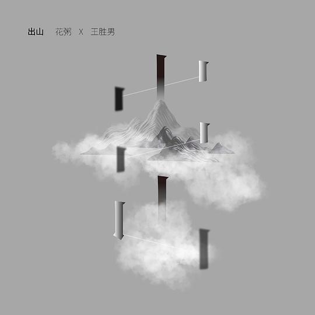

广播
共 152 个月
3411 条广播
其中 2208 条带正文
广播发布后不可编辑，所以每条都是那一刻的原话。
2020-08-31 20:39:38
 在看 绝命毒师 第五季 / Breaking Bad Season 5
在看 绝命毒师 第五季 / Breaking Bad Season 5
2020-08-30 23:06:32
 玩过 超级幸运狐 Super Lucky’s Tale ★★★★☆
玩过 超级幸运狐 Super Lucky’s Tale ★★★★☆
挺有意思的休闲游戏，就是视角卡的太难受了，总觉得把握不好前面的平台离我有多远
2020-08-30 22:33:23
 玩过 刀剑神域：夺命凶弹 ソードアート・オンライン フェイタル・バレット ★★★☆☆
玩过 刀剑神域：夺命凶弹 ソードアート・オンライン フェイタル・バレット ★★★☆☆
手感非常差，游戏粗糙程度可以说制作成本不及育碧年货的1/3，总之玩了几个小时玩不下去了，还好是game pass自带的
2020-08-30 22:19:24
 看过 绝命毒师 第四季 / Breaking Bad Season 4 ★★★★★
看过 绝命毒师 第四季 / Breaking Bad Season 4 ★★★★★
精彩！怎么看都是完结篇，不知道第五季还有啥。话说回来这季结束感觉cook了那么多最后只得到了一个洗车店 =。=
2020-08-30 22:18:49
想看 绝命毒师 第五季 / Breaking Bad Season 5
2020-08-29 22:50:21
 玩过 Sky光·遇 Sky: Children of the Light ★★★☆☆
玩过 Sky光·遇 Sky: Children of the Light ★★★☆☆
ps游戏本身还是很不错的，就是移植到手机之后氪金要素增加了，游戏体验也差了很多
2020-08-29 16:54:00
在看 绝命毒师 第四季 / Breaking Bad Season 4
2020-08-29 15:39:38
想看 绝命毒师 第四季 / Breaking Bad Season 4
2020-08-29 15:39:24
 看过 绝命毒师 第三季 / Breaking Bad Season 3 ★★★★★
看过 绝命毒师 第三季 / Breaking Bad Season 3 ★★★★★
太惨了, 一步错步步错
2020-08-28 16:42:43
 想看 间谍之桥 / Bridge of Spies
想看 间谍之桥 / Bridge of Spies
2020-08-27 21:46:10
在看 绝命毒师 第三季 / Breaking Bad Season 3
2020-08-23 18:48:54
想看 绝命毒师 第三季 / Breaking Bad Season 3
2020-08-23 18:48:35
 看过 绝命毒师 第二季 / Breaking Bad Season 2 ★★★★★
看过 绝命毒师 第二季 / Breaking Bad Season 2 ★★★★★
上上周复习了第一季, 第二季精彩啊! 越来越接近 Narcos的剧情了, 毒贩链顶端是个体面的人物, 便于洗钱…
2020-08-23 09:38:09
听过 离人愁 ★☆☆☆☆
抄袭烟花易冷、清明雨上、山外小楼夜听雨实锤，难怪第一感觉这么好听，因为原曲都很好听
2020-08-23 09:35:18

听过 出山 ★☆☆☆☆
抄的super love实锤
2020-08-22 00:49:18
 在玩 糖豆人: 终极淘汰赛 Fall Guys: Ultimate Knockout ★★★★★
在玩 糖豆人: 终极淘汰赛 Fall Guys: Ultimate Knockout ★★★★★
ps+免费领取，又是一个现象级的游戏，把疫情期间无法举行的跑酷类线下活动搬到游戏世界里了，总共一个摇杆+3个键，难得见到的简单游戏
2020-08-17 12:30:36
 想看 好莱坞往事 / Once Upon a Time… in Hollywood
想看 好莱坞往事 / Once Upon a Time… in Hollywood
那必须是Margaret Qualley圈粉的, 死搁里的mama
2020-08-17 00:59:59
 玩过 死亡搁浅 DEATH STRANDING
玩过 死亡搁浅 DEATH STRANDING
14章结束，很棒的游戏。Hideo的脑回路真的迷，竟然能把送快递做的这么好玩。剧情叙述也是很厉害，一点一点拨开真相，直到最后一秒都还保持着神秘性。音乐也很带感，看到城市的一霎那音乐响起，长舒一口气。
2020-08-16 10:43:46
 想看 湮灭 / Annihilation
想看 湮灭 / Annihilation
2020-08-15 15:05:33
 看过 X战警：黑凤凰 / Dark Phoenix ★★★★☆
看过 X战警：黑凤凰 / Dark Phoenix ★★★★☆
又是一部标准的CG秀技能电影, 不同的是观影的人, 我发现一说话我就能听出来谁是哪的口音了, x教授的新西兰口音特别特别重 然后Jean的美音也是特别重! 如果Google “james mcavoy kiwi accent” 或者 “Sophie Turner american accent”, 能出来一大波结果hhhh 虽然他们都不是这俩地方的人… 不过我不是一个人!
2020-08-10 19:40:31
 想玩 Angel Beats! -1st beat-
想玩 Angel Beats! -1st beat-
ATF汉化组汉化了5年还没汉化完，交给我俩日语白学作都汉化完了。mark用英文补丁
2020-08-08 18:51:25
 想看 西部世界 第三季 / Westworld Season 3
想看 西部世界 第三季 / Westworld Season 3
2020-08-08 18:51:04
 看过 西部世界 第二季 / Westworld Season 2 ★★★★★
看过 西部世界 第二季 / Westworld Season 2 ★★★★★
18年7月下的, 文件躺硬盘里2年了, 终于看完. 很精彩, 人工智能终于混入人群了, 期待第三部的内容.
2020-08-08 17:25:34
 看过 花木兰 / Mulan ★★★★★
看过 花木兰 / Mulan ★★★★★
小学的时候我爸搞来了这个电影的VCD, 真的是做的太好了, 有同期(?)的宝莲灯做对比, 实在是太爱这个动画了, 在那个互联网不发达的年代这个vcd看了无数遍
2020-08-08 17:05:27
 想看 勇敢传说 / Brave
想看 勇敢传说 / Brave
主题曲Brave 圈粉
2020-08-08 14:09:34
 看过 远程遇害 谋杀内幕篇 / リモートで殺される 殺人の裏側編 ★★☆☆☆
看过 远程遇害 谋杀内幕篇 / リモートで殺される 殺人の裏側編 ★★☆☆☆
解密篇才是应该发布的版本吧… 非要剪出来一个莫名其妙的片子… 本来正片结尾剪一个解密版本就行了, 非要把夹在正片里面, 所以我是5倍速看完的. 看完之后感觉很多秘密还是没有解开… 服了
2020-08-08 14:07:42
 看过 远程遇害 / リモートで殺される ★★★☆☆
看过 远程遇害 / リモートで殺される ★★★☆☆
形式比较新颖, 但是剧情还是挺无聊的 =.=
2020-08-07 11:38:05
 想看 毒枭：墨西哥 第一季 / Narcos: Mexico Season 1
想看 毒枭：墨西哥 第一季 / Narcos: Mexico Season 1
墨西哥观望
2020-08-07 11:37:25
 在看 毒枭 第三季 / Narcos Season 3
在看 毒枭 第三季 / Narcos Season 3
很难想象哥伦比亚曾经有这么动乱。。同学去波哥大留学也是挺传奇的了
2020-08-07 11:11:41
 看过 毒枭 第二季 / Narcos Season 2 ★★★★★
看过 毒枭 第二季 / Narcos Season 2 ★★★★★
终于抓到艾斯卡巴·帕波了。他看起来是个普通人，但是确实是个杀人犯。
2020-08-04 08:09:45
 想看 PlayStation变革史 / From Bedrooms To Billions: The PlayStation Revolution
想看 PlayStation变革史 / From Bedrooms To Billions: The PlayStation Revolution
2020-08-03 18:36:48
 想看 釜山行2：半岛 / 부산행2-반도
想看 釜山行2：半岛 / 부산행2-반도
换演员了? 口碑不行但是还是好奇
2020-08-02 09:39:22
在玩 死亡搁浅 DEATH STRANDING
2020-08-01 19:46:37
想看 毒枭 第二季 / Narcos Season 2
2020-08-01 19:44:53
 看过 毒枭 第一季 / Narcos Season 1 ★★★★★
看过 毒枭 第一季 / Narcos Season 1 ★★★★★
精彩的贩毒集团顶部斗争, 之前看了一堆毒骡在机场被抓简直就像是在小公司工作, 用户QPS只有两位数, 在顶部集团就类似于在大公司, QPS最少也是6位数 hhhh 过瘾
2020-07-31 23:09:48
 看过 蜘蛛侠：英雄远征 / Spider-Man: Far from Home ★★★★☆
看过 蜘蛛侠：英雄远征 / Spider-Man: Far from Home ★★★★☆
这是一部被进度条无限剧透的电影, 梗有点多以至于我还得查查 =.= 总体来说还不错, 特效啥的很过瘾
2020-07-31 20:42:13
 看过 极限逃生 / 엑시트 ★★★★☆
看过 极限逃生 / 엑시트 ★★★★☆
攀岩运动宣传片. 片尾疯狂暗示把我逗笑了 hhhh
2020-07-31 13:07:41
 玩过 七日 7Days ★★★★★
玩过 七日 7Days ★★★★★
用Play Pass玩的，感觉很新颖，总共4个结局，很顺利地一周目打到GE。
2020-07-29 22:46:35
 在看 最危险游戏 第一季 / Most Dangerous Game Season 1
在看 最危险游戏 第一季 / Most Dangerous Game Season 1
2020-07-26 22:57:52
 想看 误杀
想看 误杀
2020-07-25 19:17:44
 看过 大赢家 ★★★☆☆
看过 大赢家 ★★★☆☆
国内能看到反派获胜的电影也只有在演习里了吧 hhh 非常的"正能量" + zzzq…
2020-07-25 17:38:32
 看过 十二个想死的孩子 / 十二人の死にたい子どもたち ★★★☆☆
看过 十二个想死的孩子 / 十二人の死にたい子どもたち ★★★☆☆
实在是… 中途睡着了… 苯环这次一个颜艺也没有, 简直是来客串的吧
2020-07-25 15:33:45
 看过 饥饿站台 / El hoyo ★★★★☆
看过 饥饿站台 / El hoyo ★★★★☆
我很想知道第0层和334层是什么东西啊 =.=
2020-07-24 21:52:48
 玩过 尼尔：机械纪元 NieR:Automata ★★★★★
玩过 尼尔：机械纪元 NieR:Automata ★★★★★
2017-03-11预购的，由于种种原因（主要是电脑带不起来）没有通关。为了这个游戏，我买了steam手柄，视频通关了第一作（因为没有ps3所以视频通关）。然后当我看到xbox game pass包含这部作品的时候我知道我终于可以通关了！游戏三周目的流程设计非常精彩，战斗打击感也很棒，就是有点难。结局毫不犹豫捐献了存档，感谢一路上帮助过我的陌生人：） 完结撒花！
2020-07-23 21:10:01
 看过 我是大哥大 SP / 今日から俺は!!SP ★★★☆☆
看过 我是大哥大 SP / 今日から俺は!!SP ★★★☆☆
有点水，感觉给剧场版造势的，中间全员笑场也没重拍😐
2020-07-22 08:57:07
 玩过 斯普拉遁 2 Splatoon 2 ★★★★☆
玩过 斯普拉遁 2 Splatoon 2 ★★★★☆
操作方式我真是太喜欢了，可惜fps永远的手残，弃坑
2020-07-22 08:46:28
 玩过 最后生还者 第二部 The Last of Us Part II ★★★★★
玩过 最后生还者 第二部 The Last of Us Part II ★★★★★
这个是我亲自用PS4玩完的第一个游戏。
中途怒喊fk 4次，第一次是Ellie被Abby拿枪指着，第二次是Abby拿枪指着Ellie，第三次是Ellie拿起书包重启旅程，第四次是Ellie继续搞Abby。每次喊fk的时候都想让我弃坑了，但是还是坚持玩下去了。
游戏设计很合理，紧张一段时间之后能缓一段时间，不用过于担心弹尽粮绝。气氛塑造简直了，Rat King（本作唯一boss）那一段太吓人了，浑身鸡皮疙瘩，硬是死了10次。我一定要给这个游戏加上个惊悚的标签。
剧情没那么差，说剧情差的大多没有亲身体验这个游戏。前半剧情是有点吃惊，但时候后半剧情解释了前面的所有。略惋惜的就是末世中，两个杀“父”仇人之间的恩怨全部是队友领便当。
这游戏后劲是有点大，结尾Joel和Ellie的歌声点题，赞！
2020-07-21 19:29:44
 看过 暗黑 第三季 / Dark Season 3 ★★★★☆
看过 暗黑 第三季 / Dark Season 3 ★★★★☆
感觉三部得连起来看，不然脑子会炸会懵逼。大团圆结局很满意，脑洞很满意，时间跳来跳去本可以展现得更好
2020-07-19 09:18:36
 玩过 恶名昭彰：破晓 inFamous: First Light
玩过 恶名昭彰：破晓 inFamous: First Light
2020-07-19 09:18:23
 想玩 恶名昭彰：次子 inFamous: Second Son
想玩 恶名昭彰：次子 inFamous: Second Son
对马岛开发商开发的，mark
2020-07-18 15:01:07
 玩过 UNO® ★★★★★
玩过 UNO® ★★★★★
玩游戏玩到了返璞归真的阶段
2020-07-18 09:47:47
 想玩 塞伯利亚之谜3 Syberia 3
想玩 塞伯利亚之谜3 Syberia 3
1折买票
2020-07-18 09:47:21
 玩过 1937特种兵 ★★★★☆
玩过 1937特种兵 ★★★★☆
小学时候玩的，今天看Gamkr的盟军敢死队视频提到了这个作品，又勾起另外一波回忆，看了些gameplay的视频，想起来当时我第一关就卡住了，那两个机枪兵死活过不去（原来是从小就手残
2020-07-17 19:50:08
 在玩 对马岛之魂 Ghost of Tsushima
在玩 对马岛之魂 Ghost of Tsushima
入手澳实体，不过先借人玩了hhh 美末还没打完阿西。。。有点吓人
2020-07-17 19:49:23
 玩过 超猎都市 Hyper Scape ★★★★☆
玩过 超猎都市 Hyper Scape ★★★★☆
一如既往地手残，不过这个游戏TTK比valorant好多了，所以分数给高些，枪械手感一般
2020-07-12 16:31:53
 看过 速度与激情：特别行动 / Fast & Furious Presents: Hobbs & Shaw ★★★★☆
看过 速度与激情：特别行动 / Fast & Furious Presents: Hobbs & Shaw ★★★★☆
飙车元素弱化了一些, 不过还是很精彩! 就比较有意思的是这个女主咋啥间谍片都有她的影子LOL
2020-07-11 13:46:46
想玩 对马岛之魂 Ghost of Tsushima
感觉是呼之欲出的日本刺客信条, 可狂战可潜入. 纠结港版还是澳实体
2020-07-06 12:26:45
 玩过 逃出生天 A Way Out ★★★★★
玩过 逃出生天 A Way Out ★★★★★
看的纯黑和琉璃玩的b站版本（和直播版本不一样）。很棒的游戏，设计很新颖很好玩。结局有点太虐了，很难缓过来，铺垫这么久等来这样的结局，真的接受不能，制作组不能弄3个结局其中一个是大团圆真结局么？虽然最后幸存的人都留了对方的胡子，但是还是虐。。
2020-07-04 17:39:51
 看过 加密货币 / Crypto ★★★★☆
看过 加密货币 / Crypto ★★★★☆
难道是我很久没有看这种类型的电影的原因吗？感觉评价跟跟豆瓣均分大相径庭。这个电影不难看，也不好看，可能我本身就对金融和计算机都感兴趣吧。题目起得还ok，不过跟加密货币关系不大，整部电影只有~10分钟在说加密货币？不过有些行业就是容易惹来杀身之祸 hmmm
2020-07-02 22:39:08
想看 我是大哥大 SP / 今日から俺は!!SP
2020-07-02 11:26:37
 在玩 盗贼之海 Sea of Thieves
在玩 盗贼之海 Sea of Thieves
跟小伙伴一起玩
2020-07-01 16:38:13
 想玩 女神异闻录5 乱战 魅影攻手 ペルソナ5 スクランブル ザ・ファントムストライカーズ
想玩 女神异闻录5 乱战 魅影攻手 ペルソナ5 スクランブル ザ・ファントムストライカーズ
2020-07-01 16:33:55
在看 暗黑 第三季 / Dark Season 3
2020-07-01 16:33:24
在玩 最后生还者 第二部 The Last of Us Part II
上周接了个ps4，开始玩。。。这部评分是真的有点低
2020-06-30 12:56:00
 看过 无限系统树 / Infinite Dendrogram インフィニット・デンドログラム ★★★☆☆
看过 无限系统树 / Infinite Dendrogram インフィニット・デンドログラム ★★★☆☆
又是一个说游戏中的bug的故事。不过看的时候有个思考，开发ai真没必要造机器人，能在虚拟世界中生活的就可以。
2020-06-23 21:41:50
 看过 诈欺游戏 电影版 / ライアーゲーム ザ・ファイナルステージ ★★★★☆
看过 诈欺游戏 电影版 / ライアーゲーム ザ・ファイナルステージ ★★★★☆
还挺有意思的，囚徒困境扩展，剧情发展和逻辑上没毛病，也有意外之处，总体还是中规中矩，画面也一般
2020-06-22 19:14:51
 在玩 最终幻想7 重启 FINAL FANTASY VII REMAKE
在玩 最终幻想7 重启 FINAL FANTASY VII REMAKE
借来了ps4，先玩这个吧，等tlou2到货
2020-06-22 18:59:53
 想看 信号100 / シグナル100
想看 信号100 / シグナル100
今天放源
2020-06-20 10:39:16
 想看 诈欺游戏 / ライアーゲーム
想看 诈欺游戏 / ライアーゲーム
2020-06-19 22:08:42
 想玩 地平线 西之绝境 Horizon Forbidden West
想玩 地平线 西之绝境 Horizon Forbidden West
借来了四公主，打折入了实体，坐等到货玩1代先，这个估计要到明年年底打折才买了
2020-06-19 20:03:16
 看过 爱情生活 第一季 / Love Life Season 1 ★★★★☆
看过 爱情生活 第一季 / Love Life Season 1 ★★★★☆
怎么说呢，剧里描述的还真是很不一样的生活啊。
2020-06-19 08:07:31
 玩过 纪念碑谷2 Monument Valley 2 ★★★★★
玩过 纪念碑谷2 Monument Valley 2 ★★★★★
在Google play上通关了，体验还是很不错的，只能说腾讯吃翔难看。
2020-06-17 17:33:57
在看 爱情生活 第一季 / Love Life Season 1
在rrys上看的，莫名其妙多出来一堆积分，没订过HBO还💩
2020-06-14 18:51:53
 想玩 底特律：化身为人 Detroit: Become Human
想玩 底特律：化身为人 Detroit: Become Human
准备白嫖同学ps4的变人
2020-06-14 08:59:47
 想看 富豪谷底求翻身 第一季 / Undercover Billionaire Season 1
想看 富豪谷底求翻身 第一季 / Undercover Billionaire Season 1
2020-06-14 00:37:18
想看 爱情生活 第一季 / Love Life Season 1
满大街都是她的海报，刚好也是我喜欢的女演员
2020-06-13 22:52:40
 想看 黑客帝国：矩阵重启 / The Matrix Resurrections
想看 黑客帝国：矩阵重启 / The Matrix Resurrections
2020-06-13 22:48:02
 想玩 迷失 Stray
想玩 迷失 Stray
2020-06-07 22:18:42
 看过 行骗天下JP：运势篇 / コンフィデンスマンJP 運勢編 ★★★★★
看过 行骗天下JP：运势篇 / コンフィデンスマンJP 運勢編 ★★★★★
看完惊呼nb！但是还是感觉不是那么过瘾，感觉这个系列剧的反转铺垫的还是不够。像看不见的客人和Knives out 这种铺垫的就非常棒。但是剧情的设计我还是很喜欢
2020-06-07 22:08:55
 想看 情书
想看 情书
想看一下他是怎么毁原作的。
2020-06-06 16:35:20
 想看 欢乐满人间2 / Mary Poppins Returns
想看 欢乐满人间2 / Mary Poppins Returns
same
2020-06-06 16:35:14
 想看 欢乐满人间 / Mary Poppins
想看 欢乐满人间 / Mary Poppins
因为音乐来的
2020-05-30 23:49:23
 想玩 Harmonia Harmonia -ハルモニア-
想玩 Harmonia Harmonia -ハルモニア-
好吧，查了下Angel Beats 的游戏汉化还是没出来，当时就是说废坑了，过了这么多年还是没有新组占坑，Key社没落了啊sigh 不过这个游戏还是准备玩下！
2020-05-30 23:40:21
 想玩 夏日口袋 Summer Pockets
想玩 夏日口袋 Summer Pockets
感觉有一种回首往事的感觉，又开始想玩GAL了 =。= 那就从带我入坑的Key社mark起吧，虽然4年前就知道了，但是没有mark，毕竟当时更期待的AB1B游戏汉化坑了八百年，不知道现在怎么样了，等写完就去瞅瞅
2020-05-30 23:28:35
 在玩 魔法使之夜 魔法使いの夜
在玩 魔法使之夜 魔法使いの夜
硬是在我的win10 64位版跑起了这个游戏，太艰难了，看来推老GAL还是虚拟机大法好。久仰许久，一直没机会玩，这回总算是认真装起来了（放在硬盘里有6年了吧），不知道什么时候可以推完。
2020-05-30 22:39:13
 想看 小说之神 / 小説の神様 君としか描けない物語
想看 小说之神 / 小説の神様 君としか描けない物語
试一下吧，看预告片似乎有点剧情
2020-05-30 22:34:39
 想看 哪啊哪啊神去村 / WOOD JOB！神去なあなあ日常
想看 哪啊哪啊神去村 / WOOD JOB！神去なあなあ日常
纯粹是被名字和清野菜名吸引过来的
2020-05-30 22:32:24
 想看 行骗天下JP / コンフィデンスマンJP
想看 行骗天下JP / コンフィデンスマンJP
2020-05-30 22:28:20
 看过 齐木楠雄的灾难 真人版 / 斉木楠雄のΨ難 ★★★★☆
看过 齐木楠雄的灾难 真人版 / 斉木楠雄のΨ難 ★★★★☆
整个电影都是靠桥本环奈颜艺撑起来的，剧情一般，感觉并没有什么灾难 hhh 还是那些固定搭配，有点容易串剧hhhhh
2020-05-30 22:25:23
 想看 王者天下 / キングダム
想看 王者天下 / キングダム
2020-05-30 22:19:37
 想看 冰果 真人版 / 氷菓
想看 冰果 真人版 / 氷菓
突然迷上了动漫改编真人版
2020-05-30 22:17:52
 想看 我是大哥大 电影版 / 今日から俺は！！劇場版
想看 我是大哥大 电影版 / 今日から俺は！！劇場版
2020-05-30 22:14:35
 想看 辉夜大小姐想让我告白：天才们的恋爱头脑战 / かぐや様は告らせたい〜天才たちの恋愛頭脳戦〜
想看 辉夜大小姐想让我告白：天才们的恋爱头脑战 / かぐや様は告らせたい〜天才たちの恋愛頭脳戦〜
2020-05-30 17:55:06
 想看 第六感 / The Sixth Sense
想看 第六感 / The Sixth Sense
2020-05-28 20:38:05
 看过 大空头 / The Big Short ★★★★★
看过 大空头 / The Big Short ★★★★★
看完感叹，这世界上把人变成数字的不仅有IT公司（数据），还有华尔街（钱）。
2020-05-27 18:49:51
 想看 浪客剑心 最终章 人诛篇 / るろうに剣心 最終章 The Final
想看 浪客剑心 最终章 人诛篇 / るろうに剣心 最終章 The Final
2020-05-25 14:29:26
 想看 春&夏事件簿 / ハルチカ
想看 春&夏事件簿 / ハルチカ
音乐+苯环，果断mark下
2020-05-25 14:27:05
想看 齐木楠雄的灾难 真人版 / 斉木楠雄のΨ難
2020-05-22 21:07:14
 玩过 图灵测试 The Turing Test ★★★★★
玩过 图灵测试 The Turing Test ★★★★★
玩了四章，有点脑子不够用了，最后三章视频通关💩 剧情很棒，关卡设计也很棒，就是反光做的比较差，空无一人的设施总能看到墙上有人影，有点吓人。。
2020-05-22 17:08:16
在玩 图灵测试 The Turing Test
解谜游戏我喜欢，xgpu走起
2020-05-22 16:39:52
 玩过 废土 复刻版 Wasteland Remastered ★★★★☆
玩过 废土 复刻版 Wasteland Remastered ★★★★☆
很像小学时候在纸上玩的游戏，遇到什么东西，做出什么反应，一回合一回合。之前是看到第三部才有兴趣试试xgpu的这个第一部，然而第一部不好玩啊💩
2020-05-22 16:18:51
 玩过 怒之铁拳4 Streets of Rage 4 ★★★★☆
玩过 怒之铁拳4 Streets of Rage 4 ★★★★☆
感觉这种类型的游戏不适合我，体验了一下，第一关都过不了，手残 orz
2020-05-22 16:02:55
 玩过 天外世界 The Outer Worlds ★★★★★
玩过 天外世界 The Outer Worlds ★★★★★
设定和游戏性非常喜欢，不过有点略肝，没玩完，可能以后有机会再补？
2020-05-22 15:59:28
 玩过 艾迪芬奇的记忆 What Remains of Edith Finch ★★★★★
玩过 艾迪芬奇的记忆 What Remains of Edith Finch ★★★★★
2小时通关，感叹游戏玩法设计竟然能这么脑洞大开，而且非常好玩。和life is strange比起来，这个游戏简直是太好玩了。音乐和故事配的非常棒，有时候会因为音乐暂停故事。不过也为Finch家族感觉同情，一个个悲伤的故事。
2020-05-22 14:57:13
在玩 艾迪芬奇的记忆 What Remains of Edith Finch
继续XGPU
2020-05-22 13:23:10
 玩过 奥日与萤火意志 Ori and the Will of the Wisps ★★★★★
玩过 奥日与萤火意志 Ori and the Will of the Wisps ★★★★★
xgpu通关，哎，结局出乎意料，但是也挺好的。游戏体验绝对是完美，取消了上作的手动存档，加上主旋律的各种变化，这次体验更加沉浸。期待下一部！
2020-05-21 10:46:26
 想玩 黑色洛城 复刻版 L.A. Noire Remastered
想玩 黑色洛城 复刻版 L.A. Noire Remastered
原公司炸了，观望这个remastered版本
2020-05-21 10:42:05
 想玩 黑色洛城 L.A. Noire
想玩 黑色洛城 L.A. Noire
试试土澳游戏公司的产品
2020-05-17 22:18:18
 想看 爱情与灵药 / Love & Other Drugs
想看 爱情与灵药 / Love & Other Drugs
记得大学的时候打LOL的时候WE有个辅助选手叫灵药，当时查出处就是这里。mark下
2020-05-17 17:43:16
想看 糊涂侦探2 Get Smart 2 (2020)
2020-05-17 17:05:03
 想看 女间谍 / Spy
想看 女间谍 / Spy
2020-05-17 17:03:44
 想看 糊涂侦探 / Get Smart
想看 糊涂侦探 / Get Smart
2020-05-11 23:04:15
 看过 憨豆特工 / Johnny English ★★★★★
看过 憨豆特工 / Johnny English ★★★★★
剧情还能这么反转，真是开脑洞😛
2020-05-05 19:20:46
 玩过 梦幻花园 Gardenscapes ★★★★★
玩过 梦幻花园 Gardenscapes ★★★★★
厉害，宝石迷阵可以做成经营模拟类，创新分给满分
2020-05-03 17:03:57
 看过 生化危机：复仇 / バイオハザード：ヴェンデッタ ★★★★☆
看过 生化危机：复仇 / バイオハザード：ヴェンデッタ ★★★★☆
不是那么恐怖，剧情一般，三种病毒的逻辑有点意思，刚好全球都在pandemic，美国依然是最惨的 😅
2020-05-03 17:00:32
 看过 新冠病毒解码 / Coronavirus, Explained ★★★★★
看过 新冠病毒解码 / Coronavirus, Explained ★★★★★
2020-05-01 12:28:12
 玩过 符文之地传说 Legends of Runeterra ★★★☆☆
玩过 符文之地传说 Legends of Runeterra ★★★☆☆
感觉没有玩出什么新意，玩了两天删了，常见的开卡+刷时间套路 =。= 还是单机游戏适合我
2020-05-01 12:15:23
 想玩 二之国 白色圣灰的女王 二ノ国 白き圣灰の女王
想玩 二之国 白色圣灰的女王 二ノ国 白き圣灰の女王
mark重制版
2020-05-01 12:14:52
 想玩 二之国2：亡灵王国 二ノ国II レヴァナントキングダム
想玩 二之国2：亡灵王国 二ノ国II レヴァナントキングダム
2020-05-01 12:11:47
想玩 最终幻想7 重启 FINAL FANTASY VII REMAKE
可以上xbox吗？谢谢。。。